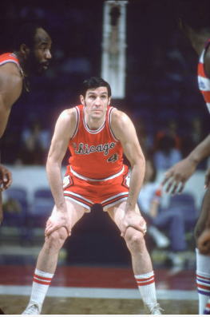
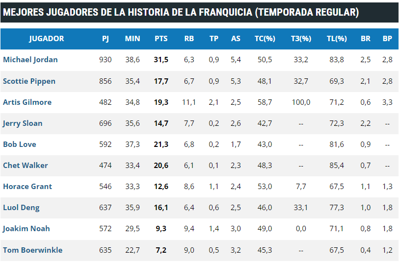
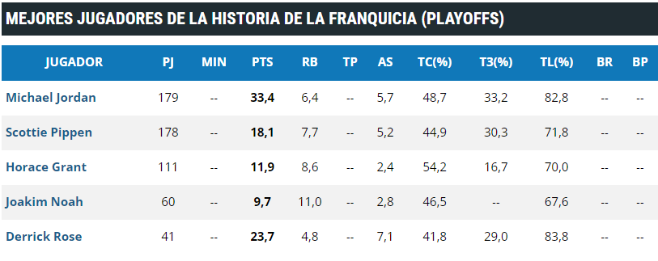
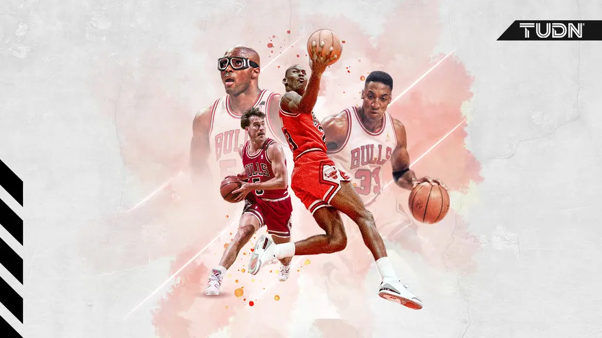
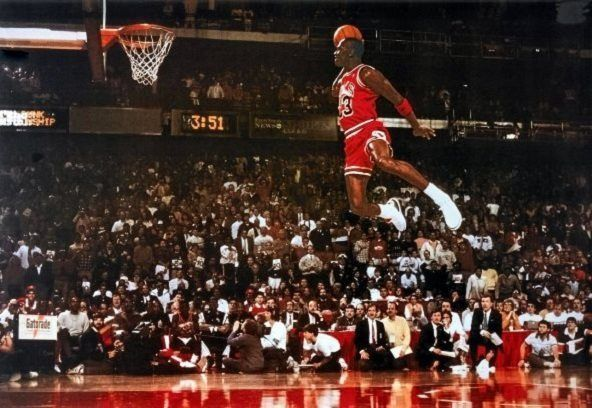

Nos situamos en el año 1966 cuando se engendra la sociedad llamada Chicago Bulls. Por esos tiempos la ciudad del viento ya había sido el hogar de dos conjuntos profesionales de baloncesto, los Chicago Packers/Zephirs (actuales Washington Wizards) que se marcharon en el año 1963 a Baltimore, y los Chicago Stags, que primeramente fueron equipo de la antigua "BAA" y detrás de ello compitieron en la ya actual NBA. Este equipo desapareció en el año 1950, mucho antes de la creación de los Bulls.

Los Chicago Bulls comenzaron su historia el 16 de enero de 1966. Aquel año, la ciudad de Chicago adquiere una nueva franquicia en la NBA llamada ‘Bulls’. Su historia se remonta a dos equipos pertenecientes a los estados de Chicago que no tuvieron mucho éxito como fueron los Chicago Stags (Los Ciervos de Chicago), uno de los equipos que estaban vigentes en la Asociación de Básquetbol Americana, una de las ligas predecesoras de la NBA. A principios de la década de los 50, los Stags ya estaban en la NBA, pero decidieron ya no continuar en la liga.
Poco más de una década tuvo que pasar para que los chicanos tuvieran un equipo de basquetbol profesional, y fue en 1961 cuando llegaron los Chicago Packers, sin embargo, los fracasos provocarían que se cambiarán de nombre y de sede (se llamaron Baltimore Zephyrs)
Chicago necesitaba una nueva quinteta en la NBA y fue que en 1966 cuando los Chicago Bulls nacieron gracias a Dick Klein. Su nombre fue inspirado para dar referencia al poder y fuerza de una ciudad cuya base era el empaque de carnes.
El arranque del equipo fue fulgurante, consiguiendo en su primera temporada un récord de 33 victorias y 48 derrotas,el mejor récord de siempre para un equipo de expansión. Les sirvió para clasificarse para los Playoffs, siendo el único equipo en hacerlo en su temporada inaugural.
Los Bulls formaron un equipo muy competitivo del que sobresalían nombres como Bob Love, Chet Walker, Jerry Sloan o Norm Van Lier. Los Bulls se clasificaron para Playoffs desde la temporada 1969-70 hasta la 1974-75. Sin embargo, sólo consiguieron pasar de primer ronda en dos ocasiones.
En 1972, con la venta de entradas y el interés popular creciendo, bajo la dirección de Dick Motta, los Bulls lograron un récord de 57 victorias y 25 derrotas, el mejor de la franquicia por aquel entonces. En 1975 llegaron a finales de conferencia, cediendo finalmente ante los Golden State Warriors en el 7º partido.
Jugadores de Chicago Bulls que han recibido algún premio u honor de la NBA a lo largo de la historia del equipo (MVP, All-Star, All-NBA team, etc.) o han liderado la liga en alguno de los principales apartados estadísticos se mostrarà en la siguiente tabla

Primero se mostrarà la tabla de mejores jugadores de la historia de la franquicia (TEMPORADA REGULAR)
Ahora mostraremos la tabla de mejores jugadores de la historia de la franquicia (PLAYOFFS)
Los Chicago Bulls fueron fundados el 16 de enero de 1966, pero fue hasta hasta la década de los 90 que el equipo empezó a escribir su propia historia al conseguir seis títulos de la NBA, en dos etapas con tricampeonatos consecutivos (1991, 1992 y 1993) y (1996, 1997 y 1998).
En 1984, la franquicia de Chicago selecciono a Michael Jordan de la Universidad de Carolina, que acabaría esa temporada como tercer máximo anotador de la NBA, cuarto en robos de balón, y nombrado Novato del Año.
Jordan se echó el equipo al hombro y junto con John Paxson, Scottie Pippen, Horace Grant, Bill Cartwright, B.J. Armstrong, Craig Hodges, Cliff Levingston, y Jay Williams conquistaron el primer tricampaonato al hilo en la historia de los Bulls.

Michael Jordan, fue votado cinco veces como el jugador más valioso del año de la NBA, ganó dos medallas de oro olímpicas, y llevó a los Chicago Bulls a seis campeonatos de la NBA. Considerado el mejor en la historia del baloncesto, sorprendió a todos anunciando su retiro en 1993 al alegar que ya no disfrutaba jugar como antes. Probó suerte en el beisbol, deporte que amaba su padre, quien fue asesinado en ese mismo año.

En este apartado, mediante el link siguiente podremos ver el calendario de esta temporada de los Chicago Bulls.
Tambien podremos ver las estadisticas, plantilla y la profundidad por posiciones
LINK DE LA LIGA ACTUAL